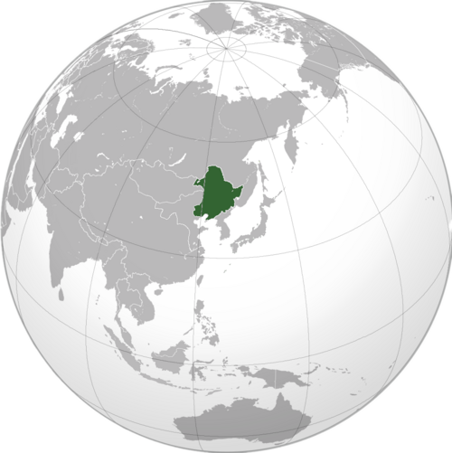
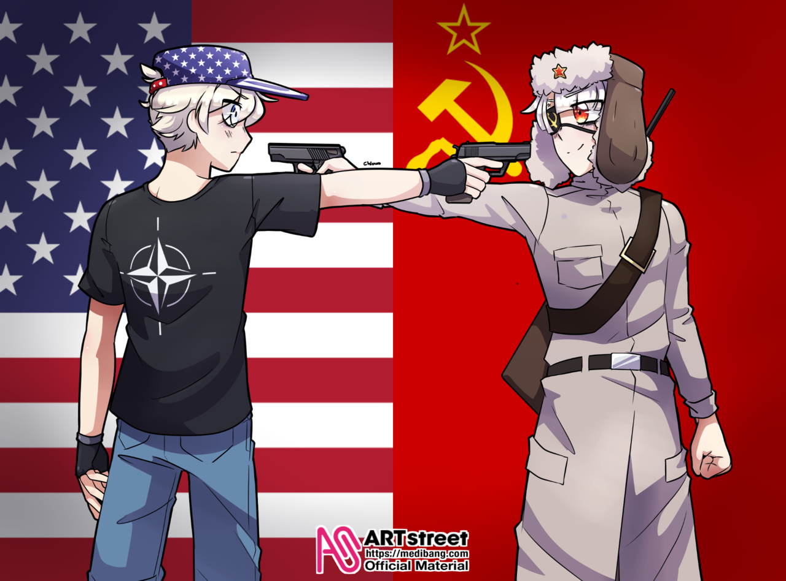
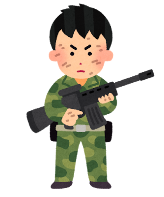

言葉 のリスト
朝鮮
Korea
戦争
War

原因
Cause
影響
Influence
以外
Except
他の国々
Other countries
内戦
Civil war
共産党
Communist Party
勝つ
To win
中華民国
Republic of China
台湾
Taiwan
ソ連
Soviet Union
不凍港
Ice-free port

求める
To seek
満州
Manchuria

鉄道
Railroad
港
Port
冷戦
Cold War

関係
Relationship
返却
Return (of something)
開始
Start
同意
Agreement
持つ
To have

決める
To decide

支援
Support
決定
Decision
助け
Help
敵
Enemy
世界
World
戻る
To return
普通
Normal
残酷
Cruel
死亡
Death
兵士
Soldier

平民
Civilian
死傷者
Casualties
戦俘
Prisoner of war